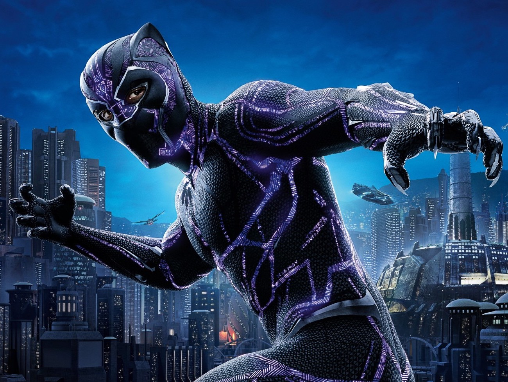

Courageous Conversations

On February 12, 2019, I attended the “Marvel and (re)imagining Africa in Marion” discussion for the Day of Common Learning: Courageous Conversations. This lecture was hosted by Professor Jer Nelsen, Dr. Stephen Pierce, and Pastor Drew Morrell. The hit movie Black Panther (2019) was the focal point of the conversation. The greatest success of Black Panther (2019) was not the visuals, heroes and villains, or even the plot, but rather the representation of the African community. There were countless examples or symbolism, such as Killmonger representing some of the issues facing urban communities today. Part of the conversation was about how important it was to let the African/African American be represented in such massive successes, including the Marvel Cinematic Universe.
Empowering different races, even in a fantastical manner in a movie, allows voices to be heard, and is essential for children of that race to see someone like them can make a difference and is valued. One of the questions that was brought up during the courageous conversation was if understanding and valuing where you come from was important. I agree with Pastor Drew Morrell in that it is important because it is part of the story God created for you. I believe you ancestral roots give an individual a sense of history, meaning, and belonging. Even as a white male, I have descendants from other origins. America is only a few hundred years old. Black Panther (2019) does an excellent job of sharing a superhero story that empowers the real African American individuals of this world.